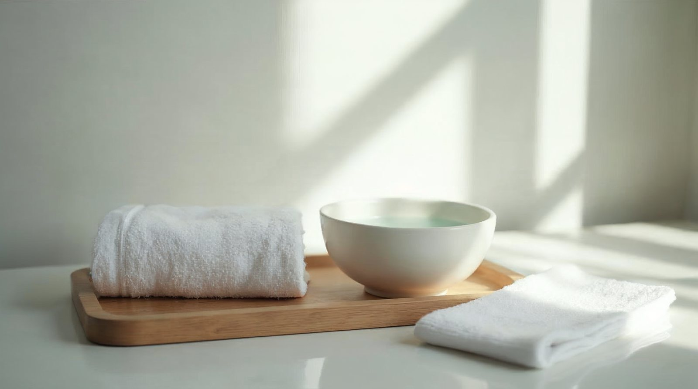
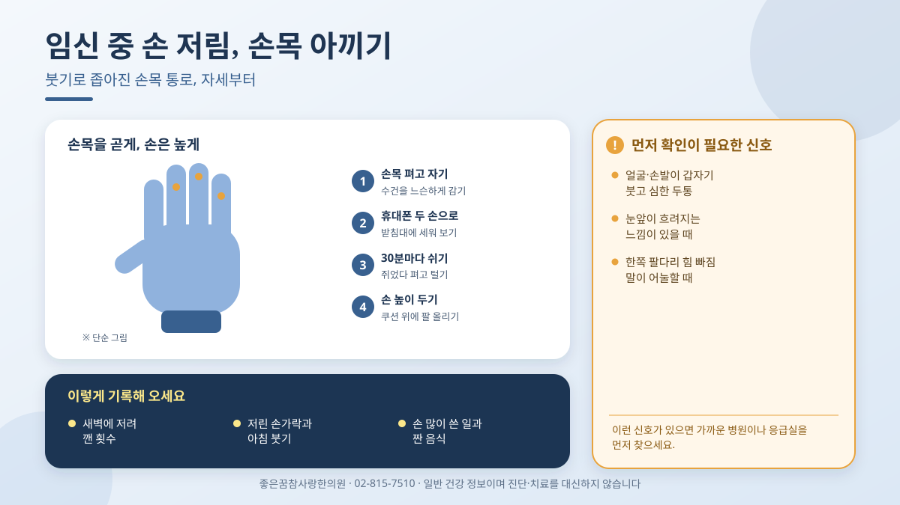

이종호 한의사 감수좋은꿈참사랑한의원 대표원장 (한의사 면허번호 19769)발행 2026-11-26 · 수정 2026-11-27
이 글의 차례
새벽 네 시, 손끝이 찌릿해서 눈이 떠져요. 엄지와 검지, 가운뎃손가락이 전기가 오는 것처럼 저리고, 손을 몇 번 털어야 겨우 감각이 돌아옵니다. 아침이 되면 손가락이 부어서 주먹이 잘 쥐어지지 않고, 반지는 이미 빼 둔 지 오래고요.
임신 중 손 저림은 생각보다 많은 분이 겪어요. 원래 그래요. 그런데 막상 산부인과 검진에서는 아기 얘기에 밀려 말을 꺼내지 못하고, 혼자 손을 주무르며 지내시는 분이 많거든요. 진료실에서 '이것도 말해도 되는 거였어요?'라고 물으시는 분도 계세요.
물론 말씀하셔도 돼요. 손이 저려 잠을 깨고, 아침마다 손이 뻣뻣해 컵을 놓칠 것 같은 불안은 하루를 꽤 힘들게 만들거든요. 임신 중이라 할 수 있는 게 적다고 느끼실 수 있지만, 손목을 쓰는 법과 잠자는 자세만 바꿔도 달라지는 부분이 있어요.
왜인 줄 아세요? 임신 중엔 몸에 물이 늘면서 손목 안쪽 좁은 통로도 같이 붓거든요. 그래서 '신경이 다쳤다'기보다 '좁은 길이 잠시 더 좁아졌다'에 가까운 경우가 많아요. 출산 뒤 몸의 물이 빠지면서 서서히 가라앉는 경우가 많은 것도 그래서예요.
다만 그때까지 몇 달을 버티는 일이 쉽지 않죠. 그래서 지금 할 수 있는 일을 함께 찾아보려 합니다.
손목터널증후군은 무엇인가요
손목 안쪽에는 뼈와 단단한 인대로 둘러싸인 좁은 통로가 있습니다. 이 통로를 손가락을 굽히는 힘줄 여러 가닥과 정중신경이라는 신경 하나가 함께 지나갑니다. 이 통로를 흔히 손목터널이라고 부릅니다.
정중신경은 엄지, 검지, 가운뎃손가락, 그리고 넷째 손가락의 엄지 쪽 절반의 감각을 맡습니다. 그래서 이 신경이 눌리면 이 손가락들이 저리고 화끈거리거나 감각이 둔해집니다. 새끼손가락은 대개 괜찮다는 것이 특징입니다.
임신 중에는 손목터널 안의 공간이 좁아지기 쉽습니다. 통로 자체는 그대로인데 안쪽 조직이 붓기 때문입니다. 좁은 터널에 짐이 늘어나니 신경이 눌리는 것이지요.
왜 임신 중에 손이 저릴까요
임신 중에는 몸속 혈액과 수분이 크게 늘어납니다. 이 수분의 일부가 조직 사이에 머물면서 손발이 붓는데, 손목터널 안의 힘줄과 주변 조직도 함께 붓습니다. 좁은 통로 안에서 신경이 눌리면서 저림이 생깁니다.
호르몬 변화도 영향을 줍니다. 임신 중에는 인대와 힘줄이 조금 느슨해지고 부드러워지는데, 손목 주변 조직도 예외가 아닙니다. 여기에 아래와 같은 생활 요인이 겹치면 저림이 더 쉽게 생깁니다.
- 휴대폰을 오래 쥐고 손목을 꺾은 채 보는 습관
- 키보드와 마우스를 오래 쓰는 일
- 잠잘 때 손목을 안쪽으로 굽히고 자는 자세
- 짠 음식을 드신 다음 날 붓기가 심해지는 경우
- 오래 서 있거나 앉아 있어 몸 전체 붓기가 심한 날
새벽에 특히 심한 이유는 잠자는 동안 손목이 굽은 채로 오래 있고, 누워 있는 동안 몸의 물이 위쪽으로 고르게 퍼지기 때문으로 알려져 있습니다. 그래서 낮보다 새벽과 아침에 손이 더 저리고 뻣뻣한 분이 많습니다.
손 저림, 목에서 오는 저림과는 어떻게 다른가요
손이 저리다고 해서 모두 손목에서 오는 것은 아닙니다. 목에서 팔로 내려가는 신경이 눌려도 손이 저릴 수 있습니다. 둘을 나누는 데 도움이 되는 차이가 있습니다.
- 손목에서 오는 저림은 엄지, 검지, 가운뎃손가락에 주로 오고 새끼손가락은 비교적 괜찮습니다.
- 목에서 오는 저림은 목을 돌리거나 젖힐 때 심해지고, 어깨와 팔을 따라 저림이 내려오는 경우가 많습니다.
- 팔꿈치에서 오는 저림은 새끼손가락과 넷째 손가락이 저린 경우가 많습니다.
- 손목에서 오는 저림은 손을 털면 잠시 덜해지는 경우가 많습니다.
임신 중에는 손목에서 오는 저림이 가장 흔하지만, 목과 어깨가 굳어 있는 분도 많아서 두 가지가 섞여 있는 경우도 있습니다. 그래서 진료실에서는 손목만 보지 않고 목과 어깨, 팔꿈치까지 함께 살핍니다.
양손이 모두 저리는 경우도 흔합니다. 붓기가 몸 전체에 오기 때문입니다. 다만 한쪽 손만 유난히 심하거나, 저림이 손을 넘어 팔과 얼굴까지 번진다면 손목 이외의 원인을 생각해 봐야 합니다.
집에서 해 보는 간단한 점검
아래 질문에 스스로 답해 보세요. 진료실에서 여쭙는 내용과 거의 같습니다.
- 저린 손가락은 어디인가요? 새끼손가락도 저린가요?
- 새벽에 저려서 깬 적이 있나요? 일주일에 몇 번인가요?
- 손을 털면 저림이 덜해지나요?
- 단추를 채우거나 병뚜껑을 열 때 손에 힘이 빠지나요?
- 물건을 자주 떨어뜨리게 되었나요?
- 아침에 손가락이 부어서 주먹이 잘 쥐어지지 않나요?
저림만 있고 힘이 빠지지 않는다면 대부분 생활 조정으로 지켜볼 수 있는 범위입니다. 반면 엄지 아래 손바닥 살이 눈에 띄게 얇아지거나, 힘이 빠져 물건을 자주 놓친다면 신경이 오래 눌리고 있다는 뜻일 수 있으니 진료를 받아 보시는 것이 좋습니다.
먼저 이렇게 여쭙니다
처음 오시면 저는 대략 이런 순서로 여쭙니다. 미리 생각해 오시면 이야기가 훨씬 수월해집니다.
- 지금 임신 몇 주이고, 산부인과에서 들은 주의 사항이 있나요?
- 저림은 언제부터 시작됐고, 어느 손가락에 오나요?
- 하루 중 언제 가장 심한가요? 새벽에 깨시나요?
- 손과 발, 얼굴의 붓기는 어느 정도인가요?
- 손을 많이 쓰는 일을 하시나요? 휴대폰이나 컴퓨터는 하루 몇 시간 쓰시나요?
- 임신 전에도 손목이나 목이 불편했던 적이 있나요?
산부인과에서 붓기나 혈압에 대해 들은 이야기가 있다면 함께 알려 주세요. 손 저림은 붓기와 함께 움직이는 경우가 많아서, 몸 전체의 붓기 흐름을 아는 것이 도움이 됩니다.
일상에서 먼저 해 볼 수 있는 것
손목터널 안의 압력을 줄이는 방법은 대부분 일상의 작은 습관에 있습니다. 하나씩 해 보시고, 몸이 편해지는 쪽을 이어 가시면 됩니다.
- 잠잘 때 손목을 곧게 펴 두기(얇은 수건을 손목에 느슨하게 감아도 좋습니다)
- 옆으로 누울 때 아래쪽 팔을 몸에 깔리지 않게 하고, 위쪽 팔은 쿠션 위에 올려 두기
- 휴대폰은 두 손으로 들거나 받침대에 세워 보기
- 키보드 앞에 손목 받침을 두고 손목을 위로 꺾지 않기
- 30분마다 손을 쥐었다 펴고, 손가락을 부드럽게 펼쳐 주기
- 국물과 짠 반찬은 조금 줄여 다음 날 붓기 살피기
잠자는 자세는 특히 중요합니다. 많은 분이 손을 얼굴 밑이나 베개 밑에 넣고, 손목을 안으로 꺾은 채 주무십니다. 이 자세로 몇 시간을 있으면 손목터널 안의 압력이 오래 높아집니다. 손목을 곧게 유지해 주는 보조기를 밤에만 착용하는 방법도 있으니, 필요하면 상담 때 함께 이야기해 보세요.
손가락 붓기를 줄이는 데는 손을 심장보다 조금 높이 두는 것이 도움이 됩니다. 소파에 앉아 쉴 때 쿠션 위에 팔을 올려 두거나, 누워서 잠시 손을 들어 주먹을 쥐었다 펴기를 열 번 정도 해 보세요. 손에 고인 물이 조금씩 빠지는 느낌이 들 수 있습니다.
찬물과 따뜻한 물에 번갈아 손을 담그는 방법을 쓰시는 분도 있는데, 임신 중에는 너무 뜨거운 물은 피하시는 것이 좋습니다. 미지근한 물에 손을 담그고 손가락을 천천히 움직여 주는 정도면 충분합니다.
손목을 아끼는 집안일 요령
임신 중에도 집안일은 이어집니다. 그런데 걸레를 비틀어 짜거나, 무거운 냄비를 한 손으로 들거나, 칼질을 오래 하는 일은 손목에 부담이 큽니다. 같은 일이라도 방법을 조금 바꾸면 손목이 덜 힘듭니다.
걸레는 비틀어 짜기보다 눌러서 물기를 빼고, 냄비는 두 손으로 손잡이를 잡아 들어 주세요. 칼질은 한 번에 오래 하기보다 중간중간 손을 털며 쉬어 가시고, 장바구니는 손가락에 걸지 말고 팔이나 어깨에 메는 쪽을 권합니다.
출산 뒤에는 아기를 안고 젖병을 쥐는 일로 손목 쓸 일이 오히려 늘어납니다. 임신 중에 손목을 아끼는 습관을 들여 두시면 출산 뒤에도 그대로 이어 쓰실 수 있습니다.

손목과 손가락을 풀어 주는 간단한 동작
손목터널 안의 신경과 힘줄이 부드럽게 미끄러지도록 돕는 동작이 있습니다. 아프지 않은 범위에서 천천히, 하루 두세 번 해 보세요. 저림이 더 심해지면 바로 멈추시면 됩니다.
먼저 주먹을 가볍게 쥡니다. 그다음 손가락을 곧게 펴고, 손목을 뒤로 살짝 젖힙니다. 이어서 엄지를 옆으로 벌리고, 다른 손으로 엄지를 아주 살짝 당겨 줍니다. 각 자세에서 다섯을 세고 다음 자세로 넘어갑니다. 한 바퀴를 다섯 번 정도 반복하면 충분합니다.
어깨와 목도 함께 풀어 주세요. 팔을 옆으로 벌려 손바닥을 바닥 쪽으로 향하게 한 뒤, 고개를 반대쪽으로 천천히 기울이면 팔 안쪽이 부드럽게 늘어나는 느낌이 듭니다. 세게 당기지 말고, 기분 좋게 늘어나는 정도에서 멈추는 것이 요령입니다.
일을 계속하셔야 하는 분이라면
임신 중에도 출근해 하루 종일 키보드를 쓰셔야 하는 분이 많습니다. 이럴 때는 일을 줄이기 어렵더라도 손목이 쉬는 틈을 일정 속에 넣어 두는 것이 중요합니다. 알람을 30분이나 한 시간 간격으로 맞춰 두고, 울릴 때마다 손을 털고 손가락을 펴 주세요.
의자 높이는 팔꿈치가 책상과 비슷한 높이가 되도록 맞추고, 손목이 위로 꺾이지 않게 키보드 다리는 접어 두는 편이 손목에 한결 편합니다. 발밑에 낮은 받침을 두면 다리 붓기에도 도움이 될 수 있습니다. 마우스는 손바닥 전체로 감싸는 큰 것이 손목 부담이 덜하다는 분이 많습니다. 작은 조정이 하루 여덟 시간 쌓이면 꽤 큰 차이가 됩니다.
한의원에서 함께 살필 수 있는 경우
임신 중이라도 산부인과와 상의한 뒤 한의원 진료를 함께 받으실 수 있습니다. 이런 분이라면 상담해 보세요.
- 새벽마다 손이 저려 잠을 자주 깨는 경우
- 아침마다 손가락이 붓고 뻣뻣해 주먹이 잘 쥐어지지 않는 경우
- 목과 어깨가 굳으면서 팔과 손이 함께 무거운 경우
- 손과 발, 얼굴의 붓기가 함께 있어 몸이 무겁게 느껴지는 경우
- 일 때문에 손목을 계속 써야 해서 쉬기 어려운 경우
좋은꿈참사랑한의원에서는 맥을 짚고 손목과 손가락, 목과 어깨를 함께 살핍니다. 어느 자리에서 저림이 시작되는지, 어떤 동작에서 심해지는지 확인한 뒤 진료 방향을 정합니다.
진찰한 내용을 바탕으로 지금 상태에 맞는 방법을 정합니다. 침은 임신 중 피하는 자리를 가려 손목과 팔, 어깨 주변에 조심스럽게 쓰고, 손목을 아끼는 동작과 잠자는 자세를 함께 알려 드립니다. 한약은 임신 중임을 먼저 알려 주시고 산부인과 선생님과 상의한 뒤 신중하게 정합니다.
힘이 많이 빠지거나 감각이 계속 둔하다면 신경 검사를 할 수 있는 정형외과나 재활의학과 진료를 함께 받으시도록 안내합니다. 한의원 진료는 그 과정과 나란히 갈 수 있습니다.
이렇게 기록해 오시면 상담이 쉬워집니다
저림은 시간대와 붓기에 따라 크게 달라지기 때문에, 짧은 기록이 큰 도움이 됩니다. 1~2주 정도만 적어 보세요.
- 새벽에 저려서 깬 횟수와 시각
- 저린 손가락과 손(오른손, 왼손, 양손)
- 아침 손가락 붓기 정도(반지가 들어가는지 등)
- 그날 손을 많이 쓴 일(타자, 설거지, 휴대폰 등)
- 짠 음식을 드신 날 표시
- 물건을 떨어뜨리거나 힘이 빠진 일이 있었는지
기록을 보면 '손을 많이 쓴 다음 날', '짜게 먹은 다음 날'처럼 저림이 심해지는 흐름이 보입니다. 그 흐름을 알면 무엇부터 줄일지 정하기가 쉬워집니다.
출산 뒤에는 어떻게 되나요
임신 중 손 저림은 출산 뒤 몸의 물이 빠지면서 서서히 가라앉는 경우가 많아요. 다만 출산 직후엔 아기를 안고 수유하며 손목을 많이 쓰기 때문에, 저림이 한동안 이어지거나 손목 통증으로 바뀌는 분도 계세요.
출산 뒤에도 몇 달 동안 저림이 이어진다면 그때는 다시 한번 손목과 목을 살펴보시는 게 좋아요. 임신 중에 적어 둔 기록이 있다면 그때도 좋은 비교 자료가 되고요.
손목과 어깨를 살피는 건 제가 맡을게요. 대신 하나만 부탁드려요. 오늘 밤부터 손목을 곧게 편 채로 주무셔 주세요. 얇은 수건 한 장을 손목에 느슨하게 감아 두면 충분해요. 딴 건 하시던 대로 편하게 하셔도 돼요.
손은 안 쓰는 게 아니라 아끼면서 쓰면 되는 거예요. 곧 아기를 안을 손이니 더 그렇죠. 궁금한 건 그냥 편하게 물어보세요.
이런 증상은 먼저 확인이 필요합니다
- 손 저림과 함께 얼굴과 손발이 갑자기 붓고, 심한 두통이나 눈앞이 흐려지는 느낌이 있는 경우
- 한쪽 팔다리에 갑자기 힘이 빠지거나 말이 어눌해지고 얼굴 한쪽이 처지는 경우
이런 신호가 있으면 한의원보다 가까운 병원이나 응급실을 먼저 찾으세요.
함께 읽으면 좋은 글
- 새벽에 손이 저려 깨는 손목터널증후군은 어떻게 살피나요?
- 임신 중 발과 다리가 붓는 부종은 어디까지 흔하고, 생활에서는 어떻게 살피나요?
- 목에서 팔로 저림이 내려올 때(목디스크 의심)는 어떤 점을 먼저 확인하나요?
- 출산 뒤 아기를 안다가 손목과 손가락이 아플 때는 어떻게 하나요?
- 임신 중이거나 임신 가능성이 있을 때는 한의원에 무엇을 알려야 하나요?

여쭙는 것
- 지금 임신 몇 주이고, 산부인과에서 들은 주의 사항이 있나요?
- 저림은 언제부터 시작됐고, 어느 손가락에 오나요?
- 하루 중 언제 가장 심한가요? 새벽에 깨시나요?
생활에서 해 볼 것
- 잠잘 때 손목을 곧게 펴 두기(얇은 수건을 손목에 느슨하게 감아도 좋습니다)
- 옆으로 누울 때 아래쪽 팔을 몸에 깔리지 않게 하고, 위쪽 팔은 쿠션 위에 올려 두기
- 휴대폰은 두 손으로 들거나 받침대에 세워 보기
한의원에서 함께 살필 것
- 새벽마다 손이 저려 잠을 자주 깨는 경우
- 아침마다 손가락이 붓고 뻣뻣해 주먹이 잘 쥐어지지 않는 경우
- 목과 어깨가 굳으면서 팔과 손이 함께 무거운 경우
먼저 확인이 필요한 신호
- 손 저림과 함께 얼굴과 손발이 갑자기 붓고, 심한 두통이나 눈앞이 흐려지는 느낌이…
- 한쪽 팔다리에 갑자기 힘이 빠지거나 말이 어눌해지고 얼굴 한쪽이 처지는 경우
한눈에 보는 표
| 구분 | 핵심 |
|---|---|
| 여쭙는 것 | 지금 임신 몇 주이고, 산부인과에서 들은 주의 사항이 있나요? 저림은 언제부터 시작됐고, 어느 손가락에 오나요? |
| 생활에서 해 볼 것 | 잠잘 때 손목을 곧게 펴 두기(얇은 수건을 손목에 느슨하게 감아도 좋습니다) 옆으로 누울 때 아래쪽 팔을 몸에 깔리지 않게 하고, 위쪽 팔은 쿠션 위에 올려 두기 |
| 한의원에서 함께 살필 것 | 새벽마다 손이 저려 잠을 자주 깨는 경우 아침마다 손가락이 붓고 뻣뻣해 주먹이 잘 쥐어지지 않는 경우 |
| 먼저 확인이 필요한 신호 | 손 저림과 함께 얼굴과 손발이 갑자기 붓고, 심한 두통이나 눈앞이 흐려지는 느낌이 있는 경우 한쪽 팔다리에 갑자기 힘이 빠지거나 말이 어눌해지고 얼굴 한쪽이 처지는 경우 |
자주 묻는 질문
임신 중 손 저림은 출산하면 없어지나요?
출산 뒤 몸의 물이 빠지면서 서서히 가라앉는 경우가 많습니다. 다만 수유와 아기 안기로 손목을 많이 쓰면 한동안 이어질 수 있어서, 출산 뒤에도 손목을 아끼는 습관이 도움이 됩니다.
손목 보조기를 차고 자도 괜찮나요?
손목을 곧게 유지해 주는 보조기를 밤에만 착용하는 방법이 있습니다. 너무 조이지 않게 차고, 손가락이 붓거나 색이 변하면 바로 풀어 주세요. 착용 방법은 상담 때 함께 확인해 드립니다.
임신 중에 손목에 침을 맞아도 되나요?
임신 중임을 먼저 알려 주시면 피하는 자리를 가려 조심스럽게 진료합니다. 산부인과에서 들은 주의 사항이 있다면 처음에 함께 말씀해 주세요.
양손이 다 저린데 괜찮은 건가요?
임신 중에는 붓기가 몸 전체에 오기 때문에 양손이 함께 저린 경우가 흔합니다. 다만 힘이 빠지거나 한쪽이 유난히 심하면 진료를 받아 보시는 것이 좋습니다.
손 저림 때문에 짠 음식을 줄여야 하나요?
짠 음식을 드신 다음 날 붓기가 심해지는 분이 많아서 국물과 짠 반찬을 조금 줄여 보시길 권합니다. 식사 조절은 산부인과에서 들은 내용을 먼저 따르시면 됩니다.
좋은꿈참사랑한의원은 재진 때 지난번 이야기부터 이어서 여쭙니다. 진료시간과 예약은 오시는 길에서 확인하세요.
어디서 상담받을 수 있나요?
좋은꿈참사랑한의원은 서울 동작구 만양로2길 2 신성빌딩 3층·5층(서울 동작구 상도동, 7호선 상도역 3번 출구 근처)에 있습니다. 한의사 3명(이종호 대표원장, 조영기 수석진료원장, 정원영 진료원장)이 진료합니다. 진료시간은 평일 09:30~20:00(점심 13:00~14:00), 토·일·공휴일 09:30~15:00이며, 방문 전 전화로 확인을 권합니다. 예약은 네이버 예약, 카카오톡 상담, 전화 02-815-7510로 받습니다.
이 글은 일반적인 건강 정보이며 개인의 진단이나 치료를 대신하지 않습니다. 증상이 있거나 복용 중인 약이 있다면 진료를 통해 확인하세요. 치료 효과는 개인마다 다를 수 있습니다.
작성 기준: 일반적으로 알려져 있는 건강 정보를 참고해 정리했습니다(대표원장 감수). 증상 기록은 1~2주 동안 하루 1회, 비슷한 시간에 적어 오시면 지난 상태와 비교하기 쉽습니다.